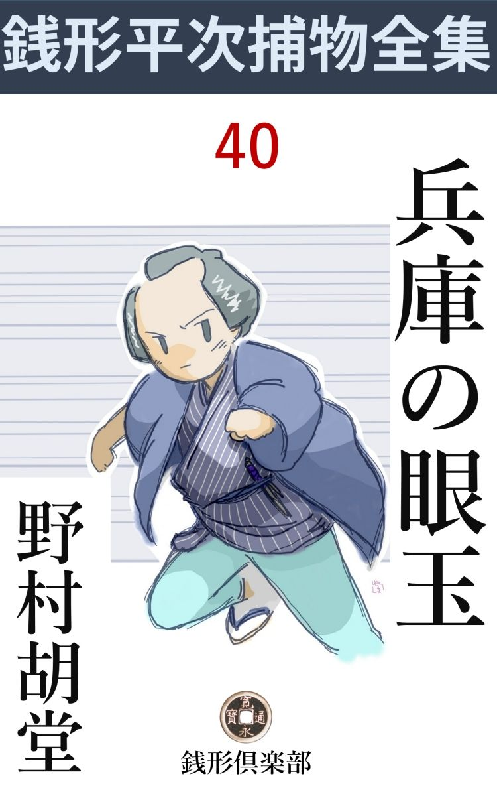
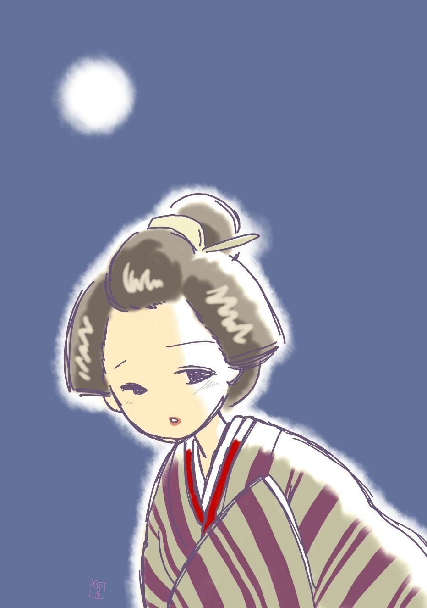

| 兵庫の眼玉: 銭形平次捕物全集第40話 (銭形倶楽部) | |
| 野村胡堂 | |
| ZENIGATA CLUB (2018) | |

一
「八、花は散り際って言うが、人出の少くなった向島を、花吹雪を浴びて歩くのも悪くねえな」
銭形平次は如何にも好い心持そうでした。
「悪いとは言いませんがね、親分」
「何だ、文句があるのかえ」
「こう、金竜山の鐘が陰 に籠 ってボーンと鳴ると、五臓 六腑 へ沁み渡りますぜ」
「怪談 噺 てえ道具立じゃないよ。見ろ、もう月が出るじゃないか」
「へッ、へッ、真っ直ぐに申上げると、腹が減ったんで」
ガラッ八の八五郎は、長い顎を撫でました。涎 を揉み上げると言った恰好です。
「もう食う話か、先刻 あんなに詰め込んだ団子はどこへ入ったんだ」
「それが解らないから不思議で、------何しろ竹屋の渡しから水 神 まで三遍半歩いちゃ、大概の団子腹がたまりませんよ」
「泣くなよ八、風流気のない野郎だ」
銭形の平次と子分の八五郎は、こんな無駄を言いながら、向島の土手を歩いておりました。
昼のうちは、落花を惜しむ人の群で、相当以上に賑いますが、日が暮れると、グッと疎 らになって、平次と八五郎の太平楽を妨 げる酔っ払いもありません。
丁度牛の御前のあたりへ来た時。
バタバタと後から足音がして、除け損ねた八五郎の身体へドンと突き当りました。
「危ねえ、後から突き当る奴もねえものだ。何をあわてるんだ」
「御免下さいまし」
振り返ったガラッ八の袖の下を掻 潜 りざま、ト、ト、トと前へ、物に驚いた美しい鳥のように駆け抜けたのは、紛れもなく若い女です。
「どっこい、待ちねえ。胡乱 な奴だ」
後ろから伸びた八五郎の手は、その帯際を無 手 と掴みました。
「急ぐ者で御座います。お許しを願います」
女は花見衣 の袖に顔を埋めて、堤 の夕闇に消えも入りそうでした。
「懐中物の無事な顔を見ないうちは、うっかり勘弁するものか」
八五郎は遊んでいる片手を働かせて、内懐から腹掛けの丼から、犢 鼻 褌 の三 つまで捜っております。女巾着切と思込んだのです。
「八、何てえ事をするんだ。見れば御武家方に御奉公している御女中のようだ。無礼があってはなるまい」
平次は見兼ねて肩を叩きました。
「へエ、巾着切じゃありませんかえ。花時の向島土手で、不意に後ろから突当るのは、巾着切と決ったようなものだが」
ガラッ八は漸く手を放します。
「飛んでもねえ野郎だ。------お女中、勘弁してやって下さい。こんな解らねえ野郎でも、役目があるんだから」
「ハイ、イエ」
女はひどく恐縮して、二人へ弁 解 をするともなく、顔の袖を取りました。堤 の掛行燈は少し遠過ぎますが、丁度田圃の上へ出た月が、その素晴らしい容貌 を、惜しみなく照し出します。
「お急ぎのようだ、構わず行きなさるが宜い。まだ花見の往来があるから、物騒なことはあるまい」
「有難う存じます。船がツイ竹屋の渡しの手前に待っておりますから」
「それじゃ、ほんの一と丁場だ、------送って上げるのも気 障 だ。酔っ払いか何かに絡 み付かれたら、大きな声を出しなさるが宜い」
平次は月明りのまだよく届かない橋の下陰を透しながら、行届いた注意を与えております。
「銭形平次親分という荒神 様 が附いているんだ、------とな」
「余計な事を言うな、馬鹿野郎」
「へエ」
ガラッ八の凹 む顔を見て、女は始めて微笑みましたが、そのまま物優しく小腰を屈めると、踵 を返して竹屋の流しの方へ急ぎます。

土手の人足は至って疎らですが、川 面 は夜桜見物の船が隙もなく往来し、絃歌と歓声が春の波を湧き立たせるばかりです。
「何か間違いがあったらしいな」
平次は三囲 の前に来た時、堤 の下を覗きました。そこに繋いだ一艘の屋根船の中には、上を下 への大騒動が始まっているのです。堤の上からは若い武家が一人、それを覗いているのを見逃す平次ではありません。
「行って見ましょうか、親分」
ガラッ八の職業意識は燃え上がりました。
「放って置くが宜い、武家の遊 山 船 だ。------町方の岡っ引が口を出す場所じゃねえ。第一後がうるさいよ。それよりは堤 の上から一生懸命、船の様子を見ている、若い武家の人相を覚えて置くが宜い」
平次はそのままそっぽを向いて通り過ぎます。
二
丁度その時、堤の下の屋根船には、大変な騒ぎが起っておりました。
駒形に屋敷を持っている、旗本大村兵庫 。三千五百石の大身ですが、若くて無役で無類の放埒、この日は柳橋から花見船を仕立てさせ、用人村川菊内、愛妾 のお町、中間 の勝造、それに庭掃除の親爺三吉をお燗番に、芸妓大小三人、幇 間 一人を伴れて、昼から漕ぎ出させ、水神まで一と往復した上、夕景から三囲の前に着けさせて、存分に夜桜の散るのを眺め、月が明るくなってから帰ろうという計画 を立てました。
日が暮れる前、召使という名義になっている愛妾のお町は、長命寺境内に叔母がいるから、一寸挨拶だけでもして来たいと言い出し、相当むずかる主人の大村兵庫をなだめて船から上り、お燗番の三吉は、用意の酒を酔っ払いの幇間にこぼされたので、口を開けたばかりの灘 の銘 酒 の補充 に、一と走り駒形まで帰りました。船の中は、酔ってないのは二人の船頭だけ、七輪は中間の勝造が預って、たそがれと共に、際限のない乱酔に落ちて行きそうでした。
しばらく濃くなる夕闇------それも存分に灯 が入ると、飲んで騒ぐ分には、何の煩 いもありません。
大村兵庫、この上もなく満足でした。喰らい肥った三十二歳の巨体を、傍若無人に芸妓の膝に凭 せ、左手に挙げた朱塗の大盃を半分乾すと、
「ホーッ」
と息を継ぎます。
「殿様、卑怯 千万。敵に後ろを見せるという法は御座いません。グッと、グッとお乾し遊ばして。お流れは、へッ、この私が頂戴仕ります」
幇間が中腰になって、泳ぐような手付きをするのでした。
「武士に向って卑怯、------とは聞捨てにならんぞ。卑怯や臆病 で休んでいるのではない。酒が切れて、お燗番の勝造が眼を白黒させておるではないか------三吉はまだ戻らぬか」
「もう、追っつけ戻りましょう」
用人の村川菊内は少し苦々しいのを我慢して、精一杯合 槌 を打っております。この辺で御意に逆らうと、いきなり「------仲へ行けッ------」と言い出さないものでもありません。
「大分手間取るようだな。ところで、月はまだ出ぬか、真暗では花見も一向興がない」
「土手の上は月が射しております。今出たばかしで御座いましょう」
勝造は艫 へ立上って、小手をかざしました。
その時、
「あッ」
主人の大村兵庫、いきなり盃を投げ出して俯向いたのです。
「どうなさいました、殿様」
芸妓、幇間 の騒いだのも無理はありません。大村兵庫の左の眼に楊弓 の矢が真っ直ぐに突立って、血潮は滾 々 として頬から襟へ滴っているではありませんか。
船の中は煮えくり返る様な騒ぎですが、誰もどうする事も出来ません。その中で一番落着いているのは、眼を射られた本人の大村兵庫でした。さすがは三千五百石を喰 む旗本だけに、気が落ち着くと、自分で矢を抜き取り、有合せの布 を集めて、キリキリと繃 帯 はしましたが、流るる血は、潮時と見えてなかなか止りません。長さ九寸、朴の木で作ったヒョロヒョロの矢ですから、他の場所に当ったんでは、たいした業 もしなかったでしょうが、眼玉を射ただけに、これは厄介です。
「この辺に外科はないか」
それでも村川菊内、一番先に医者の事に気がつきました。
「向島の土手じゃ、医者がありません。本所へ行かなきゃア」
これは勝造です。
「本所へ行く位なら、向う岸へ引返した方が宜かろう。少しでも御屋敷へ近く行きたい」
村川菊内の言葉はもっともでした。二人の船頭はそれを聞くと、堤の下の杭 に繋いだ纜 を解いて、もう艪を押す支度をして居ります。
「あっ、待って下さい」
愛妾お町はこの時、昇ったばかりの月を背に受けて、堤 を下って来たのでした。
「早く、お町さん、------殿様がお怪我をなすった」
「えッ」
勝造の言葉は、お町にとって恐ろしい打 撃 だったらしく、暫らく船に乗るのも忘れて堤 の中腹に立ちすくみました。
「どうなすった。お町さん」
「本当にお怪我？ 人にどうかされたのではない？ 勝造さん」
「楊弓で眼を射られなすったのさ。さア、船を出すぞ」
酒を取りに駒形へ帰った三吉を待っておられません。そのまま船を漕ぎ出して、中流へ五六間とも行かないうちに------。
「おーい、その船待ってくれ」
浅草の方から小舟でやって来た三吉。摺れ違いざま、川の中で舷 を付けて、こっちの船に飛乗りました。
「三吉か、------もう酒は要らねえよ」
と勝造。
「どうしたんだ。勝兄哥 」
三吉は三升樽をブラ下げて、艪 に踞 みました。五十六七、すっかり月 代 が色付いて、鼻も眼も口も萎 びた、剽軽 な感じのする親爺です。
三
翌日用人の村川菊内、神田の平次を訪ねました。
「ざっとこう言うわけだ。公儀 へは遠乗りの途中暴れ馬が殿を乗せたまま雑木林に飛込み、木の枝で眼を突かれた------と届出ているが、町人の玩 ぶ楊弓の矢で眼を一つ潰されては、何としても諦らめられない。意趣か、悪戯か知らぬが、入費はいかほど嵩 もうと苦しゅうない。是 が非でも曲者を探し出し、主君 の手で成敗したいという仰せだ。かようなことは素人に手の付けようなく、江戸一番の御用聞と聞いて参ったわけだ。何とか引受けてはくれまいか、平次殿」
折入っての頼みです。四十そこそこ、まだ用人摺れのする年ではありませんが、主人大村兵庫の脂切 ったのと違って、ひどく気の弱そうな菊内は、御用聞風情の前に揉 手 をしているのでした。
「御気の毒様ですが、私の手におえそうも御座いません。そればかしは御勘弁を願います、村川様」
平次は日頃になく尻込みをしております。
「それは又、どう言うわけだ」
「第一、御武家方の紛糾 は畠違いで御座います」
「それも承知だが、役目の表でする仕事ではない。公儀 筋 へ聞えてはこちらも迷惑、内々で探って貰えば宜いのだが------」
「------」
「折入っての頼みだが、平次殿」
「まアお手をお上げ下さい。御武家に拝まれちゃ私は逃出しでもしなきゃアなりません」
「こう言っただけでは疑念があるかも知れない------序 に言って仕舞いましょう------実はな平次殿、私がここへ参ったのは少しばかり仔細のある事だ」
「へエ------」
「主人が何と仰しゃろうと暗 闇 の恥を明るみへ出したくはないが、堤の上から楊弓を射た疑いが、騒ぎの直ぐ後で船へ帰った御女中のお町という者に懸って、昨夜から恐ろしい折 檻 を受けているのじゃよ」
「へエ------」
平次は後ろに控えたガラッ八と顔を見合せました。
「お町は主人の御寵愛の深い女で、そんな事をする筈はないと思うが、困ったことに、いろいろの証拠 がある」
「------」
「主人は眼の傷の手当をしながら苦痛を忍んでお町の折檻だ------ところでそのお町という女中が神田の銭形平次親分を呼んで下さい。あの方は何もかも御存じだから、とこう言うのだ」
「へエ」
平次は驚きましたが、それよりガラッ八はたまりかねて、平次の後ろから袖を引いております。昨夜向島の堤でガラッ八に突当ったのは、そのお町と言う女でしょう。
「旦那、よく解りました。いかにもお邸へ参りましょう」
「えっ、乗出してくれる、------それは有難い」
「ついてはいろいろ承 りたいことも御座いますが」
「何なと訊くが宜い」
村川菊内、すっかり喜んでしまいました。
「第一に、殿様に奥方はおありでしょうな」
「お喜 佐 様と言われる、三十七歳、お歳上だが、貞淑 の誉高い方じゃ」
「お里方は？」
「西久保町の矢吹様、以前は歴 とした直参じゃが------」
「御当主は？」
「御家族と申しては御舎弟狷之介 様たったお一人。まだ部屋住みで、大村様御邸に掛り人で在られる」
矢吹家が微禄していることは、言外の意味でよく解ります。
「殿様を怨む者のお心当りは御座いませんか」
「無いと申されぬが、さて、差当り思い出さぬが------」
これではなかなか埒があきません。
四
駒形の大村邸に行った平次とガラッ八は、大変な情景 を見せられてしまいました。
通されたのは女中部屋の隣の大納戸。
若い女が一人、長襦袢 一枚に剥 かれて、キリキリと縛り上げられた儘、畳の上に崩折れていたのです。
側に立っているのは主人の大村兵庫。半面を白布で巻いて、弓の折を杖に、苦痛と憤怒に、火のような息を吐いております。
「神田の平次を召連れて参りました」
村川菊内が声を掛けると、
「お、平次と言うか、御苦労であった。------飛んだ目に逢ってのう、------医者は動いてはならぬと言うが、一眼 を潰した曲者が如何にも憎い。朝っから休んでは責め、責めては休みじゃ。この女の強情が続くか、余 の根 が続くか------」
兵庫は顔を挙げて苦笑いしましたが、左の眼の痛みに引釣って、脂切った顔は、見る影もなく歪 みます。
「証拠があるように承りましたが」
平次は恐る恐る顔を挙げました。
「沢山ある、------第一に余が楊弓で眼を射られた時、この女は船にいなかった。大騒ぎの最中に堤 を降りて来たのじゃ」
「それは」
平次は口を容れようとしましたが、兵庫はそれに構わず続けます。
「いや、まだある。この女は船へ帰ると、余の傷よりも、楊弓 の矢の心配をした、------眼から抜いて側へ置いた血だらけな矢を隠そうとしたのじゃ」
「殿様」
「一年越し世話をした女だ、分 に過ぎた事もしてやってある。その恩も思わず、楊弓で主人の眼を射るとは、不都合と言おうか------」
大村兵庫はこみ上げてくる激怒に、前後を忘れて弓の折 を振り上げました。
「殿様、暫くお待ち下さいまし」
「いや放って置け」
弓の折は大納戸の淀んだ風を切って、ピシリ、お町の肉に 鳴ります。
「あッ、ツ」
身体をねじ曲げて、歯を喰いしばる女の苦 悶 の姿は、どうかしたら、兵庫には快よいものに映るのかもわかりません。たった一つの眼が、苦痛のうちにも妖 しく歓喜に輝きます。
「言えッ、女、言わぬか」
兵庫は続けざまに弓の折を振り冠るのでした。
埃り臭く、黴 臭 く淀んだ大納戸の空気は、美女の苦悩の声と折檻に絞り出された汗に薫蒸して、言いようもなく不思議な匂いを醸 し出すのを、平次は顔を反けて我慢しました。
「殿様、それは大変なお間違いで御座います。そのお町さんとか言う方は、昨夜月の出る頃から、船の中で騒ぎが始まるまで、私と一緒に堤 の上におりました。------突き当られた八五郎が何よりの証拠で御座います」
平次はそう言いながら、激情に駆られるように、兵庫と女の間に割って入りました。
「それもこの女の口から聞いたよ。平次、一つは、その言葉が本当か嘘か、たしかめるために、お前を呼んだようなものだ」
「------」
「だがな、平次。楊弓を射たのはこの女ではない、この女の兄と言って、時々邸へも出入りした男が怪しいのだ。浅五郎と言う遊び人だ。兄と言うのは、どうせ偽 りだろう」
「------」
殿様は妙に下情に通じております。
「その浅五郎が、昨日向島の土手の上をウロウロしているのを見た者があるのだ」
「誰方 が？」
平次はツイ釣られるともなく口を容れました。
「矢吹 狷之介 と言うてな、------奥の弟じゃ」
「えッ」
「奥の嫉妬 からない事を告げ口させる------と言うような疑いもあるだろうが、それは大丈夫だ。狷之介はまだ十九歳、一本気の男だ」
「それにしても殿様、堤 の上から、船の中の人の眼玉を射るのは容易の腕前では御座いません。何の某 と言う楊弓の名人でもなければ------」
「一応もっともだが、平次、まぐれ当りと言う事がある」
「へエ」
平次も弱りました。三十そこそこで、放埒で、我儘で、悪く賢こくて、なまじ下 々 の事に通じていては、およそ扱いにくい典型的な殿様です。
「長命寺境内に叔母がいると言ったのも、大方嘘であろう。その証拠には、折檻されてから寺島新田と言い直している。恐らく土 手 の上をウロウロする浅五郎の姿を見かけ、それに逢うために口実を拵えて、一刻あまりも座を明けたに相違あるまい。楊弓で余の眼を射させたのも二人の談合ずくであろう------断ってそうでないと言うなら、浅五郎の住所を言えッ」
兵庫は又お町の頭の上へ弓の折れを振り上げました。
「殿様、------私は、何も存じません。------仰しゃる通り浅五郎には逢いましたが、月の出る前に別れて、お船へ帰って参りました」
お町の言うのは本当でしょうが、兵庫は、
「偽 を申すな、------浅五郎はどこにいる」
少しも責手を緩 めようとはしなかったのです。
「存じません」
「しぶとい女だ。これでもか」
「あッ、ツ、ツ」
続け様に四つ五つ。
「菊内、代って打て。眼に響いて叶わぬ」
大村兵庫は弓の折れをポンと放って奥へ入りました。
五
この辺で少しばかり楊弓の事を説明して置かなければなりません。
言うまでもなく、これは寸法二尺八寸の極めて小さい弓で、初めは楊柳 で作りましたが、後にはいろいろの貴い材料で作り、継 弓 にして金 爛 の袋などに入れて持って歩くようになりました。
矢は九寸が極 り、羽にはいろいろの彩色を施 し、七間半の距離から三寸の的を射るのが定法です。一表の矢数は二百本。その中五十本以上の当りには、いろいろの名前がついたもので、江戸時代の名人と言われた人には、百八十本以上百九十四五本当てる人は決して少くなく、稀 には二百本『皆 矢 』のこともあったと伝えております。
室町時代には高貴の方々の遊びであったのを、江戸時代になってから、民間の遊戯となり、天保以後は品格が崩れて、美しい矢取女を呼物とする矢場に堕 落 し、一種の魔窟になってしまいました。
明治の矢場はその名残りで、明治十九年の取締りで廃絶しましたが、天保以前の矢場、即ち結 改 場 はなかなか品格のあるものだったと言うことです。
楊弓の技 に優れた人だったら、向島の土手の上から、船の中の人の目を射るのは、さして困難ではなかったでしょう、が同時に、それだけの腕を持った人は、広い江戸にも幾人もありません。
平次が、この曲者が女や子供ではない。特別な技があるだけに、反って直ぐ判るだろう------と思ったのは一応もっともです。
それはともかく------。
平次はお町の縄を解いて貰って、一応村川菊内に預け、それから、菊内の引合せで、大村邸内に住んでいるほとんどの人間に逢いました。
最初に逢ったのは、奥方のお喜佐、------少し淋しい、平凡らしい婦人で、取立てて言う程の特色はありません。夫兵庫の放 埒 を止める力もなく、蔭では泣いているといった型の、消極的な人柄ですが、こんなのが思いの外嫉 妬 が強いのではあるまいか------と平次は考えておりました。
次に逢ったのは、その弟で矢吹狷之介、十九歳の大柄な青年ですが、元服はしても部屋住みで、西久保巴町の邸に帰って、やがて家禄を継ぐ事になっている------と村川菊内が説明してくれます。
「親分」
この若い武家の顔を見ると、ガラッ八は驚いて平次の袖を引きました。あの晩、向島の堤 で、船の騒ぎを覗いていた人間に紛れもなかったのです。
「平次、お前の腕前はたいしたものだと言うな、何分頼むぞ。曲者は間違いもなくあの浅五郎の奴だ。お町も共 謀 だろう、------浅五郎が船を追っかけて、向島の堤 を往ったり来たりしていたのを、この私が確かに見たんだから間違いはあるまい」
狷之介は肩などを怒らしながら、こんな事を言います。姉の敵と思っているのでしょう、お町に対してはかなりひどい反感を持っていそうです。
「その浅五郎を御覧になったのは、何刻頃でしょう」
と平次。
「申刻 半かな」
「何か持っていましたか」
「さア、そこだよ。継 弓 にしても目に付く筈だが、どうも思い出せない」
「貴方様は、殿様日頃の遊ばされようについて、どう考えていらっしゃいます」
平次は妙な事を訊ねました。
「打明けて言うと面白くないな、------兄上もあんまりだ」
青年らしい一本気で、狷之介の顔にはサッと忿怒が一と刷 毛 彩 られます。
平次はそんな事にして、中間の勝造を呼んで貰いました。三十七八の中間にしては少し年を取った渡り者で、随分摺れてはいるようですが、たいした悪人とは思われません。
「楊弓の巧い人間に心当りはないかえ」
平次が小当りに当ると、
「芝の五郎、未磧 なんてのは？」
それは当時聞えた名人です。
「そんなのじゃない。もう少し若いのでは誰だろう」
「浄瑠璃 の今井一中がうまいって言いますよ」
「少し見当違いだな」
今井一中は都一中のこと、これも旗本の眼玉とは縁の遠い名前です。
外に女中が三人、小侍が二人、門番が一人。
最後に逢ったのは、庭 掃 きの三吉爺やでした。
「爺さん、お前はあの騒ぎを知らなかったんだね」
「土手にはろくな酒がないし、お邸には口を開けたばかりの菰 冠 りがありますから、竹屋の渡しを渡って、駒形まで飛んで帰りましたよ。三升ばかり取り分けて駆け出そうとすると吾妻橋手前で、幸い知ってる船頭衆に逢って、三囲 前のお船まで小舟で送って貰いました。船から船へ移ると、------今殿様がお怪我をなすったという騒ぎでしょう。いや驚いたの驚かないの」
三吉親爺はそういって首を振りました。年にしては少し老けていそうで、顔の皺にも、曇った眼にも、曲った腰にも、何となく労苦が刻まれているようです。出は、上総 の知行所、先代の庭掃きの株を譲られたままで、身分にも何の変哲もありません。
平次はそんな事にして引揚げることになりました。
「村川の旦那、隠さずに仰しゃって下さい。殿様はこれまで随分罪を作ってお出ででしょうね」
これが、菊内の胸倉を掴むようにして訊ねた最後の問です。
「左様」
「御女中で、目が掛けられたのは、何人位あるでしょう」
質問は具体的です。
「お町が三人目で------」
「その前はどうなりました」
「申上げ悪 いことだが、------一人は奥方の御憎しみを受けて自 害 し、一人は不義の疑いがあって御成敗を受けたよ」
「それが怪しいじゃ御座いませんか。村川の旦那、その身内の者はどうしているんです。名前は？」
平次はせき込みました。
「自害したのはお小夜と言ってな。三年前に死んだ時は十八だった。両親には過分のお手当を下すった筈だ。下谷で安楽に暮しているよ」
「旦那は御存じで」
「よく知っている」
「もう一人の方は」
「おせいと言って二十だった。------これはもう十年にもなる」
「不義の相手はどうなりました」
「これも死んだよ。当時三十そこそこの好い男だった。又三郎という遊び人でな、殿様に追われて袈 裟 掛 に斬られたまま、大川へ落込んでしまったよ」
「女の身寄は？」
「姉夫婦があった。これも世間の口がうるさいから、多分の御手当で、今以って繁昌している」
平次は少し胸が悪くなりました。こんな乱 倫 な旗本のために十手捕縄の誇りまで犠牲にして、楊弓の曲者を捕えるのが、何だか馬鹿馬鹿しいような気がしたのです。
六
「親分、どうする積りなんで」
それっきり十日ばかり、ろくに外へ出ようともしない平次を見ると、ガラッ八の方が気を揉み出しました。
「どうもしねえよ。寝 溜 めだ」
「楊弓の下手人は」
「この十年の間、江戸で高名な楊弓の名人を書き上げて貰って、その道の者に一人一人身元を当らせたが、大村兵庫に怨みのあるような気のきかない人間は一人もない」
「浅五郎は？」
「お町の亭主かい、------丁半の心得はあるだろうが、楊弓などに縁があるものか」
「困ったね。親分」
「放って置くが宜い。俺はお上の御用を勤めていりゃ宜いんだ。お町が可哀想だと思って乗り出したが、------入費は嵩 んでも苦しゅうない------てな事を言う武家の紛 々 なんかに首を突っ込むのは嫌だ」
手の付けようがありません。平次は全くこんな事を考えていたのでしょう。
その時------。
「親分、------お願い」
外から案内も乞わずに転げ込んだ者があります。
刷毛 先を散らして左へ曲げた、色の浅黒い兄 哥 。唐桟の胸をはだけて、掛け守 袋 の紐と、腹帯に呑んだ匕 首 の脹らみを見せようと言った種類の人間です。
「何でえ。吃驚 するじゃないか」
ガラッ八は以ての外の顔を出しました。
「命に拘る 大事だ。済まねえが銭形の親分に逢わしておくんなさい」
「平次は俺だが、------お前は」
八五郎の後ろから顔を出した平次を見ると、
「有難てえ。これで死んでも浮ばれると言うものだ。あっし は浅五郎と言うケチな野郎で------」
「おッ、お町の」
平次もガラッ八も驚きました。まさか、兵庫の眼を楊弓で射たと思われている、浅五郎が飛込んで来ようとは思わなかったのです。
「へッ、お町の阿魔 がお世話になったそうで、あっし からもお礼を申します」
「そんな事はどうでも宜いが、何だってここへ飛込んで来たんだ」
と平次。
「あの狷之介 の野郎に捉まって、駒形の大村屋敷に引立てられ、危なく笠の台が飛ぶところでしたよ」
浅五郎は自分の首を平手でピシャリピシャリと叩きました。
「------」
「庭先に引据えられて、殿様が一刀を引抜いて後ろへ立った時には驚きましたよ。なアに、命に糸目をつけるわけじゃねえ。この首が欲しきゃア、熨 斗 を附けてくれてやるが、あの屋敷の中で死んだんじゃ無礼討で済まされるから、これほど詰らねえことはねえ」
「------」
「計略を用 いて、殿様の面 へ砂を叩き付けると、塀を飛越えて逃出しました。いや駆けたの駆けねえの」
「何だって俺のところへ飛込んで来たんだ」
平次はまだ腑に落ちません。
「助けて貰おうてんじゃありません。この浅五郎に縄を附けて、奉行所へ突出して貰いたいんで------」
「何だと」
浅五郎は大変な事を言い出しました。
「大村兵庫の眼を、楊弓で射 潰 したのは、この浅五郎に相違御座いません。金ずくで女房を奪られた怨みだ。どんな処 刑 でも受けますが、その代り、遊び人風情に女出入りで眼玉を射られた大村兵庫も何とかして貰いましょう------とね、こう申上げる積りで。町方が筋違いなら、竜の口の評定所へでも、若年寄りの御邸へでも駆け込んでやりますよ。兵庫の野郎に腹を切らせて、あの邸にペンペン草を生やさなきゃア、胸が治まらねえ」
浅五郎は全く真気 で言うのですから、手の付けようがありません。
「馬鹿な事を言え。お前にあんな器用なことが出来るものか、あれは楊弓の名人の仕業だ」
平次は相手になりません。
「親分、そんな情ねえ事を言って貰いたくねえ。あれは紛 れ当りだ」
「そんなに都合よく紛れるものか」
「一生懸命になりゃ、俺だって、畜生ッ」
「駄目だよ浅五郎。そんな事で平次は騙せねえ。出直すが宜い」
「よし、それじゃ頼まねえ。銭形の、平次のと言うから、もう少し判る人間かと思や、何でえ」
「帰れ帰れ」
「帰らなくってさ。これから南の御奉行所へ駆け込み訴 だ」
「馬鹿な事をしちゃならねえ」
平次は驚いて飛出しました。入口で浅五郎を捕まえるのが精一杯。
「放してくれ、親分に用事はねえ」
「それ程まで思い詰めたのなら相談に乗ってやろう、先ず入って坐れ」
「有難てえ。それじゃ突出して下さるか、親分、やくざ者が三千五百石の大旗本を背 負 って行きゃア本望だ。三尺高けえ木の上から上総房州を眺めて、浄瑠璃 を語って見せるぜ、親分」
浅五郎は少し有頂天です。
「待て待て、そんな話じゃねえ。お前を突出す代り、本当の下手人を捜して、あの邸からお町を救い出しゃ、それでよかろう------そんな事で手をうっちゃどうだ」
「有難てえ。親分、未練なようだが、お町は泣いているぜ、助けてやっておくんなさい。恩に着ますよ親分」
浅五郎は涙含 んでさえおりました。
「俺には段々判って来ているんだが、あの家の人間が気に入らねえのと、とりわけ殿様の面 が癪にさわるから、暫らく知らん顔をして様子を見る積りだったんだ。------お前に言われなくたって、人身御 供 のお町だけは助けてやりたい。行って見ようか、八」
「親分」
ガラッ八も妙に涙っぽい眼で平次を見上げました。
七
「平次、どうだ、曲者が判ったか」
大村兵庫はまだ左の眼に繃帯 をしたまま、脇息にもたれて平次の方を見やりました。
「大方判ったような気がいたします」
「ほう、それはえらいな。------褒美の金に糸目をつけるわけではないが、お町と浅五郎は、こっちで捉 まえたのだから、曲者がこの二人のうちなら、その方の手柄にはならぬぞ」
殿様の生 摺 れが、又イヤな事を言います。
「お町、浅五郎に罪は御座いません」
「はて？」
「他に下手人があったとしましたら、お町浅五郎の両名はお許し下さるでしょうか」
「許し難いところだが、その方の手柄に免じても宜いのう」
「それでは申上げます」
平次は少し居住 を直しました。
縁側に坐って、存分に春の陽を浴びておりますが、キリリとして好い男振りが、場所柄も、主人の傲慢さにも圧服される気色がありません。
平次の後ろには、お町が菊内に護られて、慎 ましく坐りました。
その後にはガラッ八の八五郎、これは少し場うて がしておりますが、それでも親分の号令が掛れば、直ぐにも飛出しそうです。
「お町はいつぞや申上げた通り、あの時、私と八五郎の側を離れません。浅五郎はお町に逢ったのは真 当 で御座いますが、それからズーッと、寺島新田の叔母の家におりました。長命寺境内と申したのは遠方へ行くのはお許 しがむずかしいと思ったからで御座いましょう。これは間違い御座いません。それから、もう一つお町が矢を隠したのは、浅五郎に疑いのかかるのを心配した取越し苦労からで御座います」
「フム」
平次の話は依然として少しの疑いを挟む余地もなかったのです。
「あの騒ぎの時、所在 の判然しないのは、この御邸の方でたった二人御座います」
「曲者は邸内の者とどうして相判った」
大村兵庫決して馬鹿ではありません。
「殿様の人気と申しましょうか、外向 の御噂はまことに宜しい方で、御所領の百姓は申すまでもなく、御 朋 輩 、御同役、目付、重臣方にも申分のない評判で御座います」
「左様か」
少し御世辞になりましたが、兵庫も悪い心持はしなかった様子です。
「それに、船の行方 を一日つけ廻した浅五郎が、自分の外にあの船を狙った者はないと申しております。若し又堤 を通りかかった者が偶 然 船の中の殿様を御見かけして、折よく持っていた楊弓で射たと致しますと、あまり物事が都合よく纏り過ぎます。そんな廻り合せは滅多にある筈は御座いません」
「成程」
「すると、三囲 前にお船のとまっている事を知った者が楊弓を用意して、丁度月の出前の暗い時刻を見 測 らって射たと見るのが順当で御座います」
「よく判った。ところで、あの時刻に所在不明の二人と言うのは誰と誰だ」
「申上げる前に、三人の女中を除いて、あとの方御一同、これへ御召しを願います」
平次は大村兵庫の邸にお白洲を開く積りでしょう。奥方お喜佐、弟狷 之介、愛妾にして女中のお町、用人村川菊内、中間勝造、庭掃きの三吉爺を始め、二人の小侍、門番、------までズラリと並べました。
八
「これで宜かろう。曲者は誰だ、名指して見るが宜い」
大村兵庫は一刀を引寄せます。
恐ろしい緊張が、縁から庭に流れた。男女十数名の顔をサッとかげらせました。
「それを申上げる前に、少しばかり、古い事を思い出して頂きとう御座います。今から十年前、格別の御目を掛けられた召使おせいという娘、不義の悪名を負わされて御手討になった事が御座います」
「------」
「真実 は不義ではなく、許嫁 の良夫 があったので御座います。又三郎と言う遊び人で好い男ではあったが、至って向う見ずで、殿様に召された許嫁のおせいと、御邸の木戸のところで逢引しているところを見付けられ、おせいは一刀の下に斬られて相果て、又三郎は逃げる背後から袈 裟 掛 に斬られたまま大川に落ちて相果てました」
「------」
大村兵庫は痛いところに触 られて、ムズムズしておりますが、平次の調子に淀 みがないのと、一つも嘘が交らないので、口の出しようがありません。
「------いや、死んだと思われて、その実人に助けられ、傷養生をして丈夫になったので御座います。又三郎は袈裟掛に斬られたに相違ありませんが、刀 尖 が伸びなかったので、背中を斜 に一尺も割かれ、大変な出血で、暫らくは命が助かっても起き上る力もなかったことで御座いましょう。でも、取って三十の又三郎は、どうやらこうやら起き出すと、そのまま上方へ飛んで、知り人の金で本式の結 改 場 （矢場）を開きました」
「------」
一座は矢場と聞いてザワザワとなりました。
「それから十年、商売の楊弓を稽古してしっかり磨き、京に幾人という名人になった又三郎は、名と姿を変えてこの御屋敷に入り込み、殿様に怨 を酬 いる折を狙ったので御座います。江戸の楊弓番附をどんなに調べても、殿様に怨みを持つ者のなかったのはそのわけで御座います」
「誰だ、その曲者は」
大村兵庫はたった一つの眼を光らせて見廻しました。四十前後と言うと、村川菊内、中間勝造、それに二人の小侍がありますが、いずれも曲者らしくはありません。
「あの時所在 の判らなかった二人のうちの一人で御座います」
「誰だ、それは」
「一人は狷之介様、------しかしこれは又三郎にしては若過ぎます」
「------」
狷之介は黙ってうつむきました。何にかやましい事があったのでしょう。
「奥方の御憤 りを思いやられるのは、御姉弟の情として御もっともですが、曲者を御見逃しになったのは御手落ちで御座いました------」
「それは真実 か、狷之介殿」
兵庫の一つの眼はギラリと光ります。
「もっとも、なまじ曲者を捉え、これが表沙汰になっては、反って御家の瑕 瑾 になると覚し召された事でしょう。下賤の者に楊弓で眼を射られたと知れては、御身分に拘 りましょう。狷之介様の遊ばされ方は、御褒めになって宜しいかと存じます。もっとも、お町を憎しみの余り浅五郎に罪を被 せようとなすったのは面白くありませんが------」
「フーム」
上げたり下げたりです。
が、兵庫はこれで堪能し、狷之介はすっかり油を絞られた形です。
「ところで曲者は？」
重ねて問う兵庫には答えず、平次は庭の方へ向直りました。
「又三郎、背中の傷痕 を見せて上げな」
「へエ」
何と言う事。
素直な返事をしたのは、五十七八、六十近い老人と見えた、庭掃きの三吉だったのです。
「真っ平御免ねえ」
パッと肌脱になって後ろを向くと、頸筋から背中へかけて、斜一文字に、物凄い古 傷 の痕。
「己れッ、不届な奴」
一刀を提げて大村兵庫は立ち上りました。続いて、村川菊内も、二人の小侍も------。
「御待ち下さい。表沙汰にすると、家名に拘わりますぞ。狷之介様、殿様を御留め下さい」
平次と狷之介とガラッ八が一生懸命宥 めているうちに、柄に似ぬ軽捷な三吉の又三郎は、二三つ跳んで、木戸から路地へ、往来へと逃げ去ってしまいました。
「逃がしてはならぬ、それ追えッ」
と兵庫、縁側から庭へ、足袋跣足 で飛降ります。
「殿様、それはなりません。あれは一度斬られて死んだ男の幽霊で御座います。強 って捉まえても成敗のいたしようがありません。公儀のお耳に入れば、あの男の命一つと、三千五百石の御家が釣り替になった上、一つ間違えば殿様の腹切道具になります」
平次は木戸に突っ立って、両手を拡げて押し止めました。
「殿、穏便の御沙汰を願います」
「邸外への聞えも如何、平 に御鎮まりを」
村川菊内外一同、寄ってたかって兵庫を座敷へ押上げてしまいました。
× ×
「どうだ八、溜飲 が下がったろう」
「その代り褒美はフイになったぜ、親分」
「欲張るな、三吉を逃した上、お町さんを貰って来たんだ。なア、浅五郎が神田の家で待っているぜ」
平次はそう言いながら、後ろからイソイソと従いて来るお町を顧みました。
「狷之介が曲者を見たとどうして解ったんで、親分」
「相変らず絵解きか。あの晩三囲 の前で船の騒ぎを面白そうに見ていたからさ------投げ槍か、刀、鉄砲でやられたのなら、狷之介に相違ないと思うところだが、曲者は楊弓の名人と解っているから迷ったよ」
「三吉が曲者と解ったわけは」
「船のいる場所を知って、楊弓を用意して来る隙のあるのは三吉だけさ」
「それにしても酒を持って船で来た筈だが------」
「それが詭計 だよ。往きは渡船 で行って、帰りに知合いの船頭に頼んで船に乗せて貰ったと言うのが可怪しいと思わなかったかい。------あれは、船頭を一人仲間に引入れて、少し下 手 の土手に着けさせ、そっと登って、堤 伝いに船の上へ行くと、狙いを定めて矢を射たのさ、------当ったと見ると、継弓を畳んで元の場所へ引返し、船を中流まで出して、宜い加減のところから漕ぎ戻らせ、今向う岸から来たような顔をしたのだろう。船から船へ乗移ったのが疑わせない手だよ」
「どうしてそれが解ったんで、親分は？」
「楊弓の名人は、どんなに道具を大事にするか知ってるだろう。紫 檀 の継弓を捨てる位なら、自分の身体を隅田川へ捨て兼ねないよ。------俺はそう気がついたから、村川の旦那に頼んで、そっと三吉の荷物を捜さしたのさ。三吉もそれを察したらしいが、あわよくば三千五百石の殿様を抱いて自首する積りで、逃げも隠れもしなかったのだよ。それにあの男は風呂へ入るところを人に見られるのをひどく嫌っていたそうだ。背中の傷痕があるからだ」
「又三郎は四十そこそこじゃありませんか、三吉はどう見ても五十七八、六十位に見えるが」
「大怪我で精気 を費い尽したのだろう。それに人の三倍も五倍も苦労をした。その上少し顔へ細工をして、年よりは十七八老けて見えるようになったから、平気であの屋敷へ入ったのさ。生れは上総の知行所だから、住込むとなると、わけはなかったろう」
「変な仕事だったネ、親分」
「笹野の旦那には叱られるだろうが、宜い心持さ。岡っ引もこれだから満更じゃねえよ」
人を縛らない時は、本当に朗 らかな平次だったのです。
（編注）
作品中には、身体の障害や人権にかかわる、差別的な語句や表現が見られますが、本書が成立した当時の時代背景等が現代とは異なる古典的な文学作品でもあり、著者が故人でもありますので、底本のままとしました。ご理解、ご諒承のほどをお願い申し上げます。
本編の初出時の表題は「大村兵庫の眼玉」です。
著者---野村胡堂
挿絵---萩 柚月 © 2017
初出---「オール讀物」昭和十年五月号 文藝春秋社
底本---「錢形平次捕物全集」第二巻 河出書房 昭和三十一年五月三十一日初版
編集・発行 銭形倶楽部